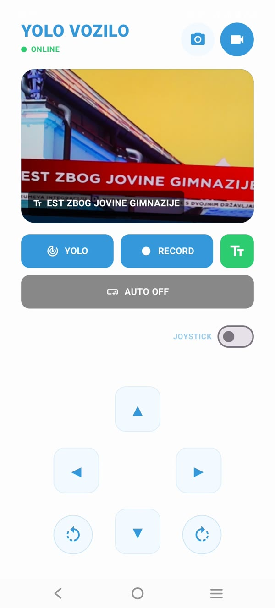
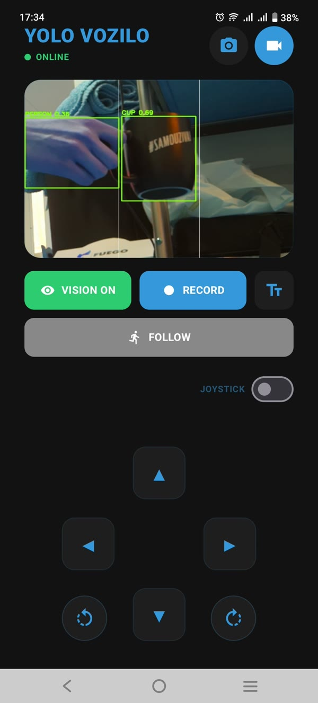
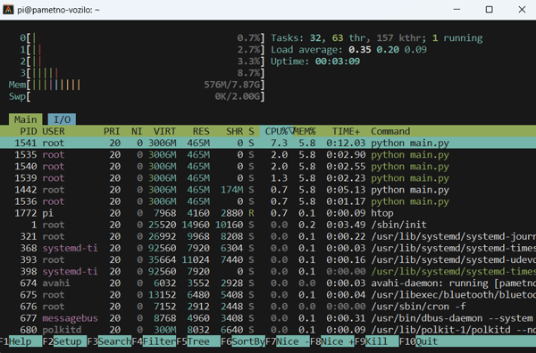

Galaksija kup je najveće zvanično nacionalno takmičenje učenika elektrotehničkih škola u Srbiji u oblasti robotike, elektronike i softverskih inovacija, koje organizuju Zajednica elektrotehničkih škola Srbije (ZETŠS) i Nordeus fondacija. Jubilarni, 10. ciklus okupio je najbolje STEM projekte srednjoškolaca širom zemlje.
Autonomno Edge AI Vozilo
Otvorena hardverska i softverska platforma za praktičnu primenu i istraživanje Edge AI računarske vizije na Raspberry Pi 5 arhitekturi.
🏆 4. Mesto & Specijalna Nagrada — 10. Galaksija Kup
Edukativna Platforma
YOLO & ML OCR
Docker Ekosistem
Priznanja i Uspeh na Takmičenju
Nacionalno takmičenje u inovativnim STEM projektima

Projekat Pametno Vozilo osvojio je 4. mesto u ukupnom plasmanu u jakoj konkurenciji finalista iz cele Srbije, kao i Specijalnu nagradu za zapaženi rezultat. Posebno su istaknuti modularni softverski sloj, primena Edge AI inferencije u realnom vremenu i napredna kontejnerizacija sistema.
Motivacija i Koncept
Povezivanje teorijskih osnova sa realnim inženjerskim izazovima
Izazov
Praktični Jaz u Nastavi
Tradicionalno obrazovanje u oblasti računarskih nauka često ostaje usmereno na teoriju i izolovane algoritme. Nedostaje rad na opipljivom hardveru gde se studenti i učenici susreću sa realnim promenljivim uslovima, kašnjenjem signala i ograničenim resursima.
Pristup
Cilj Projekta
Pametno Vozilo pruža integrisano okruženje za rad sa modelima detekcije objekata i prepoznavanja teksta u realnom vremenu. Sistem uklanja prepreke pri podešavanju okruženja i omogućava direktan rad na kontroli vozila i obradi podataka.
Inženjering
Arhitektonski Izazovi
Tokom razvoja, spajanje sinhronih procesa obrade slike i upravljanja motorima dovodilo je do zastoja u radu. Problem je rešen prelaskom na izolovane Docker kontejnere, višenitnu obradu i kreiranjem skripte za automatsko obnavljanje mrežne veze.
Hardverska Arhitektura
Pregled ključnih komponenti i modula sistema

XL4015 Step-down konverter (5.1V, 5A) obezbeđuje stabilan rad Raspberry Pi 5 računara pod opterećenjem.
Četiri DC motora sa Mecanum točkovima omogućavaju omnidirekciono kretanje i precizno pozicioniranje.
Raspberry Pi Camera Module V2 (8MP) povezana preko MIPI CSI-2 interfejsa za akviziciju video strima visoke rezolucije.
Softverski Arhitektonski Sloj
Komponente zadužene za obradu podataka i upravljanje
Detekcija
YOLO AI Model
Inference model prilagođen za obradu 30 FPS video strima, detekciju objekata na putu (5-10 FPS) i njihovo konstantno praćenje.
Optička Obrada
Google ML OCR
Ekstrakcija teksta sa saobraćajnih znakova i tablica, uz automatsku korekciju rotacije i izvršavanje tekstualnih komandi.
Obrada podataka
Višenitni Rad
Asinhrona i paralelna obrada ulaznog video strima, AI inferencije i generisanja PWM signala za kontrole motora.
Kontejnerizacija
Docker Okruženje
Izolovani servisi za server i mrežne skripte eliminišu konflikte u zavisnostima koda i ubrzavaju oporavak od grešaka.
Automatizacija
GitHub Actions CI/CD
Automatsko testiranje i build izmena pri svakom commit-u obezbeđuju stabilnost koda tokom kontinuiranog razvoja.
Distribucija
Docker Hub Registry
Centralizovani repozitorijum sa spremljenim image-ima omogućava brzu instalaciju sistema na novom Raspberry Pi uređaju.
Modularni Ekosistem Repozitorijuma
Izvorni kod je javno dostupan i podeljen po modulima
Docker • Python
RPi Server
Glavni backend servis. Upravlja periferijama, detekcijom objekata i distribucijom MJPEG video strima.
Bash • Network
Smart Network
Mrežni servis zadužen za stabilnost veze. Automatski podiže lokalnu Hotspot mrežu u odsustvu eksterne.
ONNX • TFLite
Model Pipeline
Skripte za optimizaciju, kvantizaciju i konverziju YOLO modela za hardverski ubrzan rad.
Kotlin • Compose
Android Klijent
Aplikacija za kontrolu kretanja u realnom vremenu i prikaz video strima niske latencije.
Next.js • React
Web Dashboard
Korisnički interfejs za nadzor rada vozila i analitiku parametara direktno iz veb pregledača.
Archive • Systemd
RPi Server (Legacy)
Inicijalna verzija backenda zasnovana na nativnim Linux servisima i WebSockets komunikaciji.
Mogućnosti Primene
Od učenja koncepta do praktičnih scenarija upotrebe
Primarna Svrha
Edukacija i R&D
Osnova za učenje o radu Edge AI modela, kreiranju Linux servisa i razvoju kontrolnih algoritmima u Python-u.
Pametni Gradovi
Analiza Saobraćaja
Mogućnost prilagođavanja detekcije za brojanje vozila, prepoznavanje tablica i analizu gustine saobraćaja na određenoj deonici.
Industrija 4.0
Unutrašnja Logistika (AGV)
Test-platforma za autonomne transportere koji prate vizuelne oznake i izbegavaju prepreke unutar magacinskih prostora.
Galerija Projekta
Vizuelni prikaz hardvera, priznanja i kontrolnih interfejsa
4. Mesto i Specijalna nagrada na 10. Galaksija kupu

Fizička konstrukcija vozila sa mehanikom i senzorima

Korisnički interfejs mobilne klijentske aplikacije

Prikaz rezultata obrade i detekcije u realnom vremenu

Prikaz sistemskih zapisa unutar Docker kontejnera na RPi5

Praćenje opterećenja procesora i memorijskih resursa
Faze Razvoja Projekta
Pregled dosadašnjih verzija i planiranih unapređenja
Verzija 1.0
Faza I: Prototip i Osnovna Kontrola
Osnovna verifikacija koncepta i hardvera:
- Hardver: Sastavljanje šasije i osnovna kontrola kretanja.
- Komunikacija: Daljinsko upravljanje preko fiksnog mrežnog Hotspot-a.
- Video Strim: Osnovna FPV integracija kamere.
- Softver: Prva verzija klijentske aplikacije i sinhronih Python skripti.
- AI Model: Testiranje rada sa YOLOv8 arhitekturom.
Verzija 2.0
Faza II: Modularna Arhitektura i Priznanja
Stabilizacija sistema, prelazak na izolovano okruženje i takmičarski uspeh:
- Uspeh na Takmičenju: Osvojeno 4. mesto i Specijalna nagrada na 10. Galaksija kupu.
- Refaktoring: Nova arhitektura zasnovana na Docker kontejnerima.
- AI Vizija: Implementacija i optimizacija YOLO i OCR modela.
- Mrežna Stabilnost: Samostalni mrežni servis za automatsko povezivanje.
- Aplikacija: Stabilan Android UI za upravljanje i pregled analitike.
- Open Source: Kod publiciran na GitHub-u pod MIT licencom.
Verzija 3.0
Faza III: Napredna Autonomija
Širenje funkcionalnosti i autonomnog rada:
- Programabilnost: Integracija grafičkog API-ja za učenje osnova programiranja.
- Senzori: Dodavanje LiDAR senzora i primena SLAM algoritmima za mapiranje.
- Standardizacija: Optimizacija dokumentacije za jednostavnu replikaciju projekta.
Poređenje: Teorija vs. Praksa
Analiza razlika između klasičnog učenja i rada na realnim sistemima
Klasičan Pristup
Suva Teorija
Fokus na pisanju sintakse na papiru bez mogućnosti izvršavanja koda, uočavanja grešaka u realnom vremenu ili rada sa hardverskim ograničenjima.
Ograničenja
Nedostatak Okruženja
Rešavanje zadataka bez dodira sa mrežnim protokolima, kašnjenjem signala, upravljanjem memorijom i optimizacijom resursa.
Praktičan Rad
Rad na Realnom Sistemu
Razvoj kroz neposredno rešavanje problema, kontejnerizaciju aplikacija, rad sa Edge AI modelima i samostalno istraživanje.